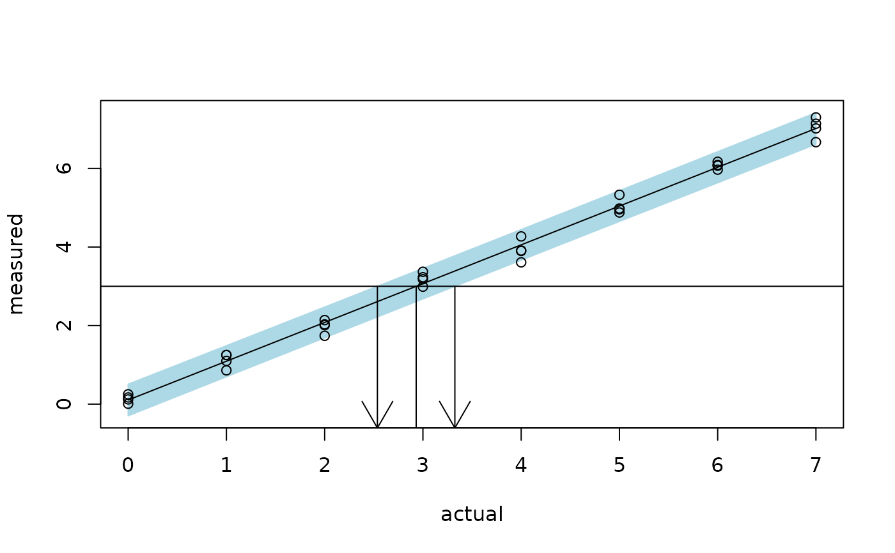
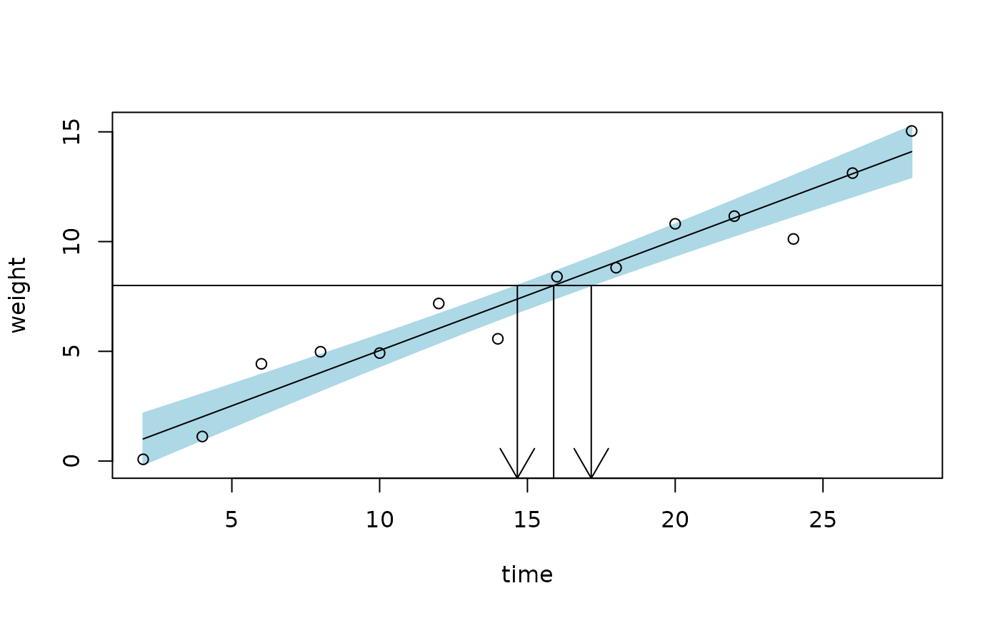

The function calibrate computes the maximum likelihood estimate and a
condfidence interval for the unknown predictor value that corresponds to an
observed value of the response (or vector thereof) or specified value of the
mean response. See the reference listed below for more details.
Usage
calibrate(object, ...)
# Default S3 method
calibrate(
object,
y0,
interval = c("inversion", "Wald", "none"),
level = 0.95,
mean.response = FALSE,
adjust = c("none", "Bonferroni", "Scheffe"),
k,
...
)
# S3 method for class 'formula'
calibrate(formula, data = NULL, ..., subset, na.action = stats::na.fail)
# S3 method for class 'lm'
calibrate(
object,
y0,
interval = c("inversion", "Wald", "none"),
level = 0.95,
mean.response = FALSE,
adjust = c("none", "Bonferroni", "Scheffe"),
k,
...
)Arguments
- object
A matrix, list, data frame, or object that inherits from class
stats::lm().- ...
Additional optional arguments. At present, no optional arguments are used.
- y0
The value of the observed response(s) or specified value of the mean response.
- interval
The method to use for forming a confidence interval.
- level
A numeric scalar between 0 and 1 giving the confidence level for the interval to be calculated.
- mean.response
Logicial indicating whether confidence intervals should correspond to an observed response(s) (
FALSE) or a specified value of the mean response (TRUE). Default isFALSE.- adjust
A logical value indicating if an adjustment should be made to the critical value used in constructing the confidence interval. This useful when the calibration curve is to be used k > 0 times.
- k
The number of times the calibration curve is to be used for computing a confidence interval. Only needed when
adjust = TRUE.- formula
A formula of the form
y ~ x.- data
an optional data frame, list or environment (or object coercible by
as.data.frameto a data frame) containing the variables in the model. If not found in data, the variables are taken fromenvironment(formula), typically the environment from whichstats::lm()was called.- subset
An optional vector specifying a subset of observations to be used in the fitting process.
- na.action
a function which indicates what should happen when the data contain
NAs.
Value
An object of class "invest" containing the following
components:
estimateThe estimate of x0.lwrThe lower confidence limit for x0.uprThe upper confidence limit for x0.seAn estimate of the standard error (Wald interval only).intervalThe method used for calculatinglowerandupper(only used byprintmethod).
Note
The invest() function is more general, but is based on
numerical techniques to find the solution. When the underlying model is that
of the simple linear regression model with normal errors, closed-form
expressions exist which are utilized by the calibrate function.
References
Graybill, F. A., and Iyer, H. K. (1994) Regression analysis: Concepts and Applications. Duxbury Press.
Miller, R. G. (1981) Simultaneous Statistical Inference. Springer-Verlag.
Examples
#
# Arsenic example (simple linear regression with replication)
#
# Inverting a prediction interval for an individual response
arsenic.lm <- stats::lm(measured ~ actual, data = arsenic)
plotFit(arsenic.lm, interval = "prediction", shade = TRUE,
col.pred = "lightblue")
(cal <- calibrate(arsenic.lm, y0 = 3, interval = "inversion"))
#> estimate lower upper
#> 2.931449 2.536740 3.325140
abline(h = 3)
segments(cal$estimate, 3, cal$estimate, par()$usr[3])
arrows(cal$lower, 3, cal$lower, par()$usr[3])
arrows(cal$upper, 3, cal$upper, par()$usr[3])

#
# Crystal weight example (simple linear regression)
#
# Inverting a confidence interval for the mean response
crystal.lm <- stats::lm(weight ~ time, data = crystal)
plotFit(crystal.lm, interval = "confidence", shade = TRUE,
col.conf = "lightblue")
(cal <- calibrate(crystal.lm, y0 = 8, interval = "inversion",
mean.response = TRUE))
#> estimate lower upper
#> 15.88820 14.65896 17.15963
abline(h = 8)
segments(cal$estimate, 8, cal$estimate, par()$usr[3])
arrows(cal$lower, 8, cal$lower, par()$usr[3])
arrows(cal$upper, 8, cal$upper, par()$usr[3])

# Wald interval and approximate standard error based on the delta method
calibrate(crystal.lm, y0 = 8, interval = "Wald", mean.response = TRUE)
#> estimate lower upper se
#> 15.8881952 14.6526267 17.1237638 0.5670834